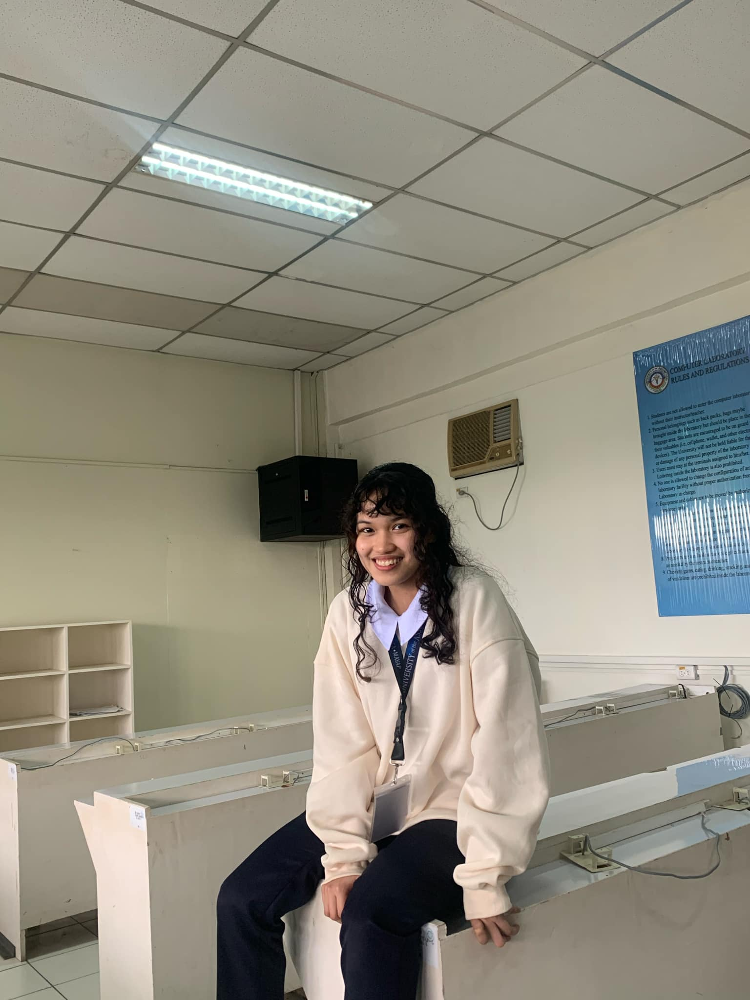
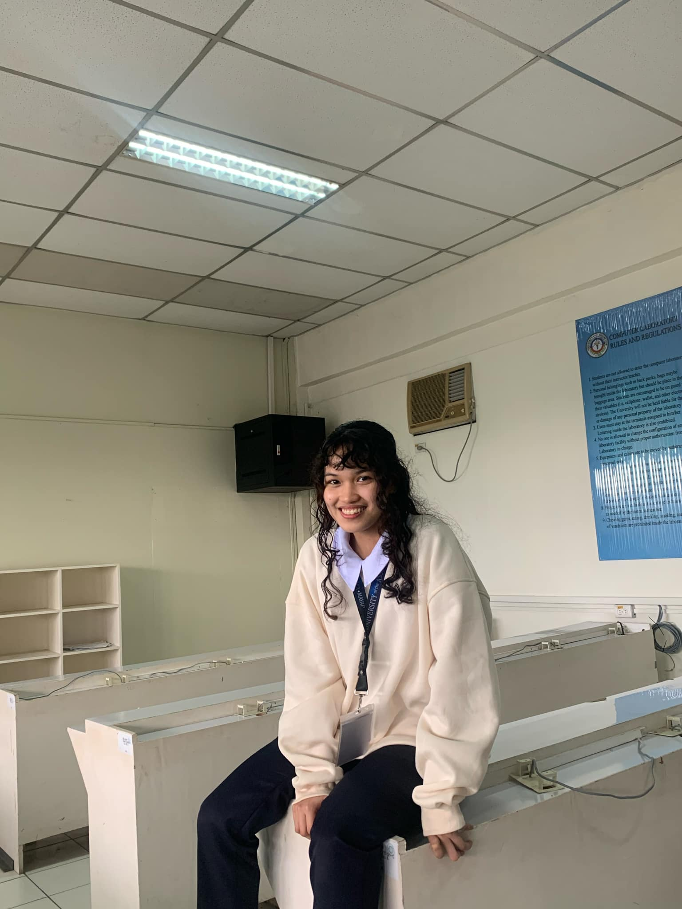

- Name:
- Joanna Faye Pineda Manio
- Nickname/s:
- People call me by different names—Faye, Joanna, Joanna Faye, Fayefaye, or Paye. Each name holds a unique connection with the people around me, reflecting different aspects of my personality and relationships.
- Hometown:
- PPampanga
- Education:
- Graduated from Kinder to Senior High at the University of the Assumption
- Currently a 2nd-year Computer Engineering student at the University of the Assumption
- Interests:
- I enjoy spending my free time scrolling through my phone, staying updated with trends and technology. I also love immersing myself in books, expanding my knowledge and imagination. My passion lies in programming, electronics, and algorithm design, as I find problem-solving and innovation exciting. Additionally, I’m fascinated by the real-world applications of data structures and algorithms, seeing how they shape technology and efficiency in everyday life.
JFMDevfolio
JOANNA FAYE
P. MANIO
COMPUTER ENGINEERING
A 2nd-year Computer Engineering student at the University of the Assumption, continuously learning and exploring circuitry, algorithms, and system design, embracing change and growth by turning every challenge into a stepping stone toward becoming a versatile and competent engineer.
.jpg) 

About me
Skills
Java
Data Structures like Deque, Heaps, and Self-Balancing Trees
Data Structures like Deque, Heaps, and Self-Balancing Trees
Python
Data structures, debugging, algorithm implementation, & GUI (Kivy/Tkinter)
Data structures, debugging, algorithm implementation, & GUI (Kivy/Tkinter)
HTML & CSS
Designing and creating simple websites.
Designing and creating simple websites.
AutoCAD
Experienced in using AutoCAD.
Experienced in using AutoCAD.
Breadboard
Basic knowledge using electronics materials & analyzing circuits.
Basic knowledge using electronics materials & analyzing circuits.
Goals
- Master Advanced Data Structures & Algorithms
- Develop a Full-Stack Application
- Explore AI & Machine Learning
- Build an Embedded System Project
- Contribute to Open-Source Projects
- Knowledgeable in Cyber Security
- Improve Public Speaking & Presentation Skills
- Be an efficient Computer Engineer someday
"The power of water is in its adaptability—soft yet unyielding, it carves mountains by yielding to them."